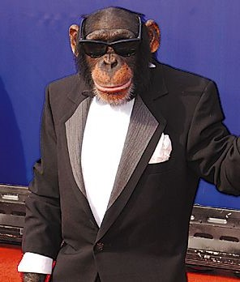
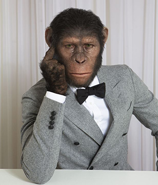

Larry Weed (not a monkey)
Larry is the creator of Banana Space.
Gerald Jet (also not a monkey)
Gerald is the co-creator of Banana space.
Larry and Gerald, two unabashed banana enthusiasts, embarked on a fruity adventure that forever changed their lives. They birthed "Banana Space," a group dedicated to spreading their love for the yellow wonders. Meetings were a banana bonanza, with Larry sporting a banana hat and Gerald showcasing banana-themed dance moves. They'd dissect the art of banana peeling and debate the perfect banana smoothie recipe. Attendees giggled over banana jokes and shared stories of banana mishaps. Banana Space became the cosmic hub for banana fanatics, where Larry and Gerald reigned supreme, forever proud to wear their banana crowns.
They wanted to make accessable to anyone, so they decided to make the group free for anyone to join.
This is what some people like you had to say about Banana Space.
"I never knew I needed Banana Space in my life until now! Larry and Gerald, you are the heroes we didn't know we deserved. This group has changed my perspective on bananas and opened my eyes to the infinite possibilities of the banana universe. Long live Banana Space!"
"Banana Space is the best thing that has ever happened to me! I've found my banana-loving tribe, and I can't stop smiling at the absurdity and joy that comes with being part of this wacky group. Larry and Gerald, you are the ultimate banana gurus, and I am forever grateful for the laughter and potassium-filled moments you've brought into my life."
"Banana Space has made me realize that bananas are not just a fruit but a way of life. Larry and Gerald have created a safe haven for all banana enthusiasts to come together, share their love for all things banana, and bask in the glory of this yellow masterpiece. It's a banana revolution, and I'm proud to be a part of it!"
"Joining Banana Space was the best decision I've ever made. Larry and Gerald's passion for bananas is contagious, and I find myself looking at bananas in a whole new light. This group has become my daily dose of laughter, silliness, and a reminder to never take life too seriously. Banana Space, you've captured my heart and my appetite for all things banana!"
"Banana Space is pure comedic genius! Larry and Gerald have created a hilarious community where we can embrace our love for bananas without judgment. From banana-themed karaoke nights to outrageous banana fashion shows, every moment is a riot of laughter. I never thought bananas could be this much fun, but thanks to Banana Space, my life has been forever changed!"